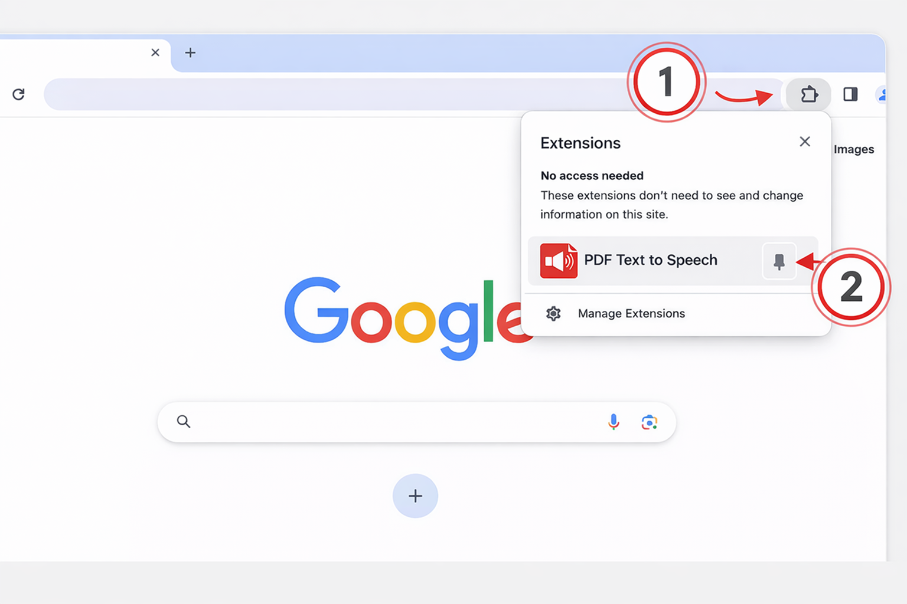
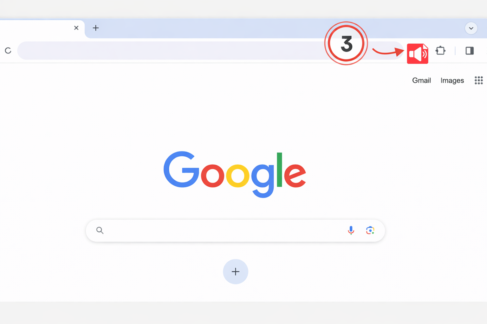

PDF Text to Speech
Pin the extension for faster PDF listening.
Open Extensions, find PDF Text to Speech, and pin it.

Use the extension right from your browser toolbar.
After pinning, it stays visible in your toolbar.

Privacy: extracted PDF text is sent to pdftext2speech.com and processed with OpenAI.